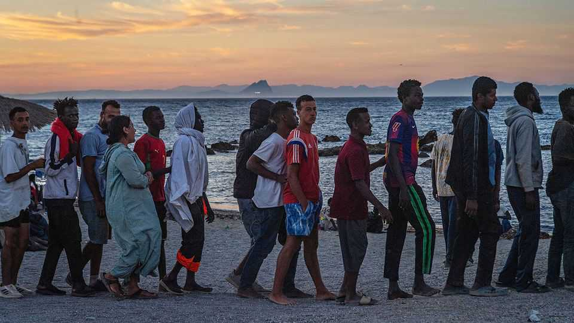
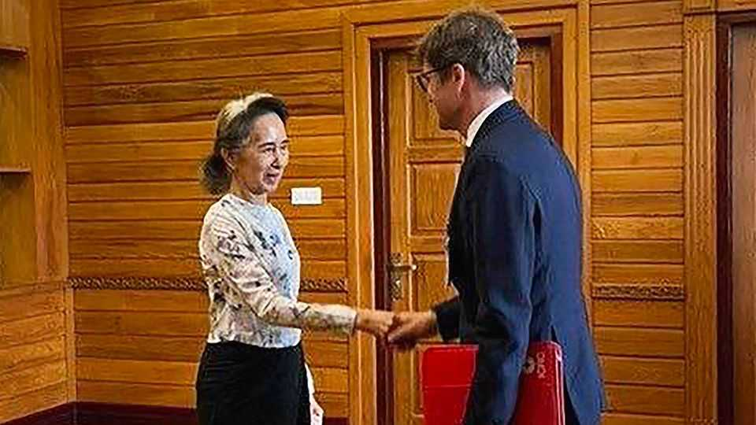

Politics

Aug 6th 2026
Spain’s interior minister said that 70,000 of the 72,000 migrants who overran Ceuta, a small Spanish enclave in northern Morocco, had returned to Morocco. At least 141 people drowned attempting to enter the territory. The extraordinary breach of security created a sense of crisis in the European Union and caused Italy and other countries to say they would suspend co-operation in the Schengen border-free zone with Spain. Pedro Sánchez, Spain’s Socialist prime minister, accused critics of inflaming the situation. Ursula von der Leyen, president of the European Commission, praised Spain’s response and swift return of the migrants.
Russia bombarded Kyiv again with drones and ballistic missiles, killing at least 17 people. America is holding discussions with Ukraine on allowing the country to make Patriot missile-defence systems, which Ukraine urgently needs to intercept Russian weaponry. After initially saying he would support such a deal Donald Trump now says he has doubts about giving away the technology. Ukraine, meanwhile, attacked more warehouses belonging to Wildberries, a Russian retailer that the army uses as a logistical hub for equipment. At least five people died. And a Ukrainian drone missed its target and killed at least seven people on a Russian beach by the Black Sea.
Volodymyr Zelensky continued the shake-up of his senior officials, dismissing Olha Stefanishyna as Ukraine’s ambassador to Washington. Ukrainian media reported that she was being investigated for alleged irregularities in declaring her assets. Ms Stefanishyna has not been charged.
Russian authorities said that a woman who delivered a bomb to a restaurant in Moscow had died in the blast. At least two other people were killed. The restaurant is located in Kudrinskaya Square, an affluent area of the city. Speculation swirled that the target was a senior Russian commander, who had survived the explosion.
Donald Trump again threatened to hit Iran very hard if it did not open the Strait of Hormuz. Oil prices fell after Qatar said a draft agreement between America and Iran to reopen the waterway had been circulated and that negotiations were in “very progressive stages”. The Trump administration claims to be involved in discussions with Iran and Oman about Hormuz. Iran denies negotiating with America, but said it had agreed on a transit route with Oman.
Hamas and all other armed groups in Gaza agreed to a complete disarmament, according to Mr Trump. Hamas said that it was not disarming; it would merely be putting its weapons into storage under Palestinian supervision. Binyamin Netanyahu, Israel’s prime minister, said his government was “looking into it”. Unnamed officials said that Israel would not cease operations in Gaza or withdraw from the strip.
Envoys from Israel and Lebanon met in Rome for their seventh round of talks this year. In June they agreed to a ceasefire and to a deal that commits the Lebanese army to disarm Hizbullah, an Iranian-backed Shia militia, and Israel to withdraw from southern Lebanon. But Israel resumed strikes on Lebanon during the talks and Hizbullah refuses to hand over its weapons.
A court case got under way in South Africa that challenges the government’s law for expropriating private land, sometimes without compensation if an agreement cannot be reached with the land’s owners. The law has formed the basis of Mr Trump’s claim that white farmers are being harassed. The Democratic Alliance, which is part of the governing coalition led by the African National Congress, has joined the case challenging the law.
Progressive Democrats scored another victory in the primaries when Abdul El-Sayed defeated Haley Stevens in Michigan to become the party’s candidate for the Senate in the midterms. Dr El-Sayed drew support from Democratic Socialists. Ms Stevens was backed by the party’s establishment. Israel was a big issue for the left-leaning primary electorate. But the left-wing is not getting it all its own way. Wesley Bell, a pro-Israel moderate congressman from St Louis, survived a challenge from a progressive candidate in his primary.
Diplomatic relations between Brazil and the United States worsened, after the Brazilian president, Luiz Inácio Lula da Silva, better known as Lula, accused two State Department officials of trying to meddle in the country’s elections. In response America cancelled the visa of Brazil’s ambassador in Washington. Brazil’s relations with Argentina also deteriorated, after the Argentine president, Javier Milei, again criticised Lula, calling him a “thief” and “corrupt”.
Flávio Bolsonaro, the right-wing candidate in Brazil’s presidential election, selected Alfredo Gaspar, a conservative congressman, to be his running-mate. Recent polling suggests that Mr Bolsonaro is closing the gap with Lula, who is still on course to be re-elected on October 4th.
Talks backed by America got under way in Venezuela on holding democratic elections. The Venezuelan government’s lead negotiator is Jorge Rodríguez, the head of the National Assembly and brother of Delcy Rodríguez, who became president when America removed Nicolás Maduro from power in January. The opposition is represented by Dinorah Figuera, who has returned from exile. María Corina Machado, who is still in exile and leads the opposition Unitary Platform, has said success will be measured by the establishment of free elections. Meanwhile, the death toll from June’s earthquakes rose to 6,125.
Sheikh Hasina gave a big speech, two years after she was ousted as Bangladesh’s prime minister and fled the country amid a series of deadly protests against her government. Speaking in India to journalists, Sheikh Hasina reiterated her vow to return in December to Bangladesh, where she has been sentenced to death in absentia for her crackdown on the student-led protests.
Tehreek-e-Taliban, an Islamist terrorist group in Pakistan, claimed responsibility for a suicide-bombing in the Swat valley, close to the border with Afghanistan, which killed 17 people. The bomb went off near a rally that was being held to demand more police protection from terrorist violence.

Myanmar’s military rulers allowed Aung San Suu Kyi to meet an official from the International Committee of the Red Cross and released photographs of the event. The authorities have not granted much outside access to Ms Suu Kyi since she was overthrown as the country’s de facto leader in a coup in February 2021. She has been kept in detention ever since and rumours had swirled that the 81-year-old was gravely ill, or even dead.
In South Korea, police raided the headquarters of Starbucks Korea, as the backlash over a marketing campaign in May showed little sign of receding. The company had promoted a “Tank Day” gimmick, which was seen to be making light of a pro-democracy protest in 1980 at which hundreds were killed. The firm has apologised but that hasn’t stopped criminal complaints being filed against it. Its mishap has turned political. Right-wingers brandish Starbucks cups to mark their opposition to Lee Jae Myung, the president.